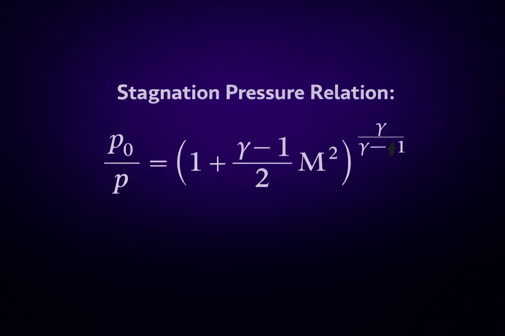
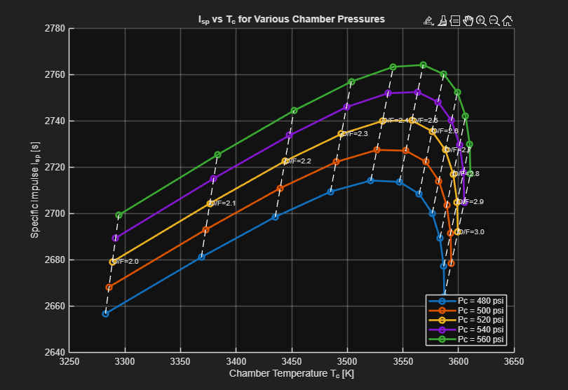
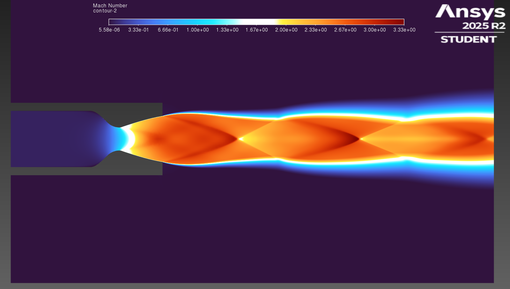

A structured propulsion design process — from isentropic theory, to NASA CEA performance modeling, to contour generation and CFD validation.
The engine design began with ideal isentropic flow relations to establish theoretical performance bounds. Using chamber pressure and expansion ratio targets, I derived exit Mach number, temperature ratios, and pressure distributions.
These equations provided the theoretical baseline before introducing real-gas effects.

After ideal approximations, NASA CEA was used to incorporate chemical equilibrium and real combustion effects.
Chamber temperature, specific impulse, gamma variation, and optimal mixture ratio were evaluated across operating conditions.
This refined thermodynamic properties used in contour generation.

SHOCKWVE, A contour generating tool was then used to generate the nozzle contour based on updated thermodynamic properties.
The resulting geometry was validated using CFD to ensure smooth expansion, minimized flow separation, and uniform exit conditions.
CFD confirmed pressure distribution and flow angle alignment within expected theoretical tolerances.
